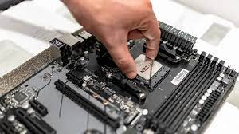
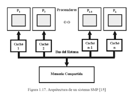
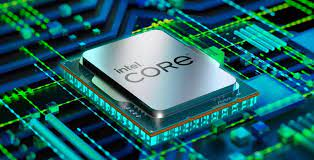
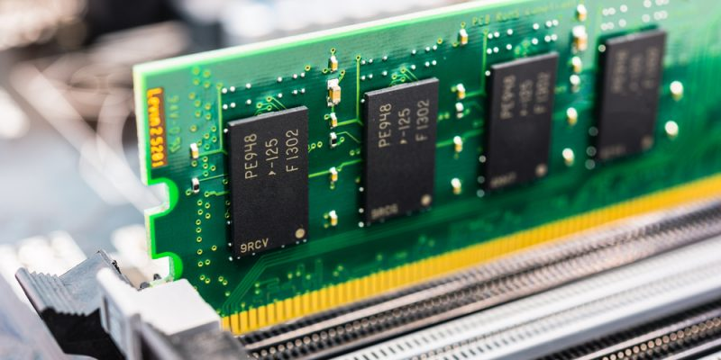

Arquitectura de computadoras
Es el diseño y la organización de un sistema para un equipo de cómputo.
Es un modelo y descripción de cada función, así como los requerimientos y las implementaciones de diseño para varias partes del equipo de cómputo.
Principalmente enfocamos en la unidad central de procesamiento lo conocemos como (CPU) el cual trabaja internamente y accede a las direcciones de memoria y a los sistemas de entrada salida, periféricos.
También suele definirse como la selección e interconexión de los componentes de Hardware para crear computadoras según los requerimientos de funcionalidad, rendimiento y costo.
El equipo de cómputo recibe y envía la información a través de los periféricos por medio de los canales de distribución o buses (cableado físico de interconexión).
El CPU se encarga de procesar la información que le llega al equipo de cómputo.
El intercambio de información se tiene que hacer con los periféricos y el CPU.
Todas aquellos unidades de un sistema exceptuando el CPU se denomina periférico, por lo que el equipo de cómputo tiene dos partes bien diferenciadas, que son: el CPU (se encarga de ejecutar programas y que está compuesto por la memoria principal, la (ALU) unidad aritmética lógica y la (UC) unidad de control) y los periféricos (que pueden ser de entrada, salida, entrada-salida y las interconexiones).

Está arquitecturas se desarrollaron en las primeras computadoras electromecánicas y de tubos de vacío.
Hay dos arquitecturas distintas relacionadas con el oso de distribución de la memoria arquitectura de Jonh Von Neumann y arquitectura Harvard
Arquitectura Von Neumann:
Tradicionalmente los sistemas de microprocesadores se basan en esta arquitectura, en la cual la unidad central de proceso (CPU), está conectada a una memoria principal única donde se guardan las instrucciones del programa y los datos. A dicha memoria se accede a través de un sistema interconexión de buses único (control, direcciones y datos).
En un sistema con arquitectura Von Neumann el tamaño de la unidad de datos o instrucciones está fijado por el ancho del bus que comunica la memoria con la CPU. Así un microprocesador de 8 bits con un bus de 8 bits, tendrá que manejar datos e instrucciones de una o más unidades de 8 bits (bytes) de longitud.
Si tiene que ceder a una instrucción o datos de más de un byte de longitud, tendrá que realizar más de un acceso a la memoria. El tener un único bus hace que el microprocesador sea más lento en su respuesta, ya que no puede buscar en memoria una nueva instrucción mientras no finalicen las transferencias de datos de la instrucción anterior.
Las computadoras digitales convencionales presentan un aspecto Von Neumann. Este modelo consta de cinco componentes principales:
Unidad de memoria
Unidad de entrada/salida
Unidad de control.
Unidad aritmética lógica.
Registros de programas.
Modelo Harvard:
Esta arquitectura utiliza los microcontroladores tiene la unidad central de proceso (CPU) conectada a dos memorias (una con las instrucciones y otra con los datos) por medio de los dos buses diferentes.
Una de las memorias contiene solamente las instrucciones del programa (memoria de programa), y la otra sólo almacenan datos (memoria de datos).
Una de las memorias contiene solamente las instrucciones del programa (memoria de programa), y la otra sólo almacenan datos (memoria de datos).
Cómo los buses son independientes estos pueden tener distintos contenidos en la misma dirección y también distinta longitud. También la longitud de los datos y las instrucciones puede ser distinta, lo que optimiza el uso de la memoria en general.
Para un procesador de set de instrucciones reducido, RISC(reduced instruction set computer) oma el set de instrucciones y el bus de memoria de programa pueden diseñarse de tal manera que todas las instrucciones tengan una sola posición de memoria de programa de longitud.
Además, hacer los buses independientes, el cpu puede acceder a los datos para completar la ejecución de una instrucción, y al mismo tiempo leer la siguiente instrucción a ejecutar.
La arquitectura segmentada es una de las tecnologías utilizadas para realizar la segmentación o paralelismo. Divide el procesador, en etapas, procesa una instrucción diferente en cada una y trabaja con varias a la vez. Pueden trabajar de forma paralela, en diferentes instrucciones, utilizando una cola de instrucciones para su comunicación, denominado entubamiento.
La dependencia de datos y de control, que tiene como efecto la disminución del rendimiento del pipelining. La segmentación de cauce (pipelining) es una forma efectiva de organizar el Hardware del CPU para realizar más de una operación al mismo tiempo. Consiste en descomponer el proceso de ejecución de las instrucciones en fases o etapas que permitan una ejecución simultánea. Explota el paralelismo entre las instrucciones de un flujo secuencial.
La segmentación es una técnica de implementación por la cual se solapa la ejecución de múltiples instrucciones. La técnica de implementación clave utilizada para hacer CPU rápidas. La segmentación es como una línea de ensamblaje: cada etapa de la segmentación completa una parte de la instrucción.
La productividad de la segmentación está determinada por la frecuencia con que una instrucción salga del cauce. Como las etapas están conectadas entre sí como todas las etapas deben estar listas para proceder al mismo tiempo. El tiempo requerido para desplazar una instrucción, un pasó, a lo largo del cauce es un ciclo máquina. La duración de un ciclo máquina está determinada por el tiempo que necesita la etapa más lenta.
Tipo de causes:
Unificación: Ejecutan un único proceso.
Multifunción: pueden ejecutar varios procesos.
Estáticos: en un instante determinado sólo pueden ejecutar uno.
Dinámicos: pueden ejecutar simultáneamente varios procesos.
Alinear: a cada etapa sólo le puede seguir otra etapa concreta.
No lineal: se pueden establecer recorridos complejos de las etapas
Ciclos de instrucción:
Ejecución de instruccciones en 5 ciclos.
Etapas de cauces:
ID: búsqueda de registros y decodificación instrucciones.
EXE: ejecución o cálculo de dirección.
MEM: acceso a la memoria de datos.
WB: escribir datos en el archivo de registros.
Se denomina multiprocesador a un computador que cuenta con dos o más microprocesadores (CPUs). El multiprocesador puede ejecutar simultáneamente varios hilos pertenecientes a un mismo proceso o bien a procesos diferentes.
La arquitectura NUMA, donde cada procesador tiene acceso y control exclusivo a una parte de la memoria y la arquitectura SMP, donde todos los procesadores comparten toda la memoria. Para que un multiprocesador operé correctamente necesita un sistema operativo especialmente diseñado para ello.
Cuando se desea incrementar el desempeño más de lo que permite la técnica de segmentación (pipeline), se refiere utilizar más de uno
procesador para la ejecución del programa de aplicación. Los CPU de multiprocesamiento según Flynn se clasifican de la siguiente manera:

SISO: computadoras monoprocesador.
SIMO: procesadores vectoriales, extenciones MMX.
MISO: no implemetado.
MIMO: sistemas SMP, Clusters, CPUs.
Los procesadores vectoriales, son computadoras pensadas para aplicar un mismo algoritmo numérico a una serie de datos matriciales, en especial en la simulación de sistemas físicos complejos como tales como simuladores de clima, explosiones atómicos, reacciones químicas, etc. Donde los datos son representados como grandes números de datos en forma matricial sobre las que se deben de aplicar el mismo algoritmo numérico.
Cuentan con instrucciones tipo vectorial que los hace muy aptos para dicha aplicación. Suelen utilizarse en conjunto con un microcontrolador en dispositivos como reproductores de audio como reproductores de DVD y BlueRay, teléfonos celulares, sistemas de entretenimiento como sistemas de adquisición de datos como instrumentos médicos como controles industriales, etc.
En los sistemas SMP (simetric multiprocessing), varios procesadores comparten la misma memoria principal y periféricos de E/S, normalmente conectados por un bus común. Se conocen como simétricos, Ya que ningún procesador toma el papel del maestro y los demás de esclavos, sino que todos tienen derechos similares en cuanto al acceso a la memoria y periféricos y ambos son administrados por el sistema operativo. Pueden formarse con varios núcleos en un solo circuito integrado o con varios circuitos integrados en una misma tarjeta madre. La primera opción ha sido popularizada al hacerse más económicos los procesadores multinúcleo de los principales fabricantes y con su uso en sistemas de gama media y baja, e inclusive en teléfonos celulares y tabletas.
Clusters:
Conjuntos de computadoras independientes conectadas en una red de área local o por un bus de interconexión y que trabajan corporativamente. Con un sistema de procesamiento paralelo o distribuido. Consta de un conjunto de computadoras independientes, interconectadas entre Sí, de tal manera que funcionan como un solo recurso computacional. Es clave en su funcionamiento contar con un sistema operativo y programa de aplicación capaz de distribuir el trabajo entre las computadoras de la red.
Procesadores gráficos (Graphics Processing Unit GPU):
Sistemas diseñados originalmente para el procesamiento de gráficos, con múltiples procesadores vectoriales sencillos compartiendo la misma memoria. La cual también puede ser accedida por el CPU, por la gran cantidad de núcleos con los que cuenta cómo lograr un excelente desempeño al ejecutar algoritmos que se adaptan a ser paralelizados, a tal grado que muchos de los súper computadoras más rápidas de la actualidad utilizan estos procesadores, y los fabricantes de tarjetas gráficas producen versiones de sus productos especializados en acelerar los cálculos de propósito general.
Además de las arquitecturas clasicas mencionadas anteriormente, en la actualidad han aparecido arquitecturas híbridas entre la Von Newmann y la Harvard, buscando conservar la flexibilidad, pero mejorando el rendimiento. Los programas cada vez más grandes y complejos demandan mayor velocidad en el procesamiento de información como lo que implica la elección de microprocesadores más rápidos y eficientes
Para el diseño de un microprocesador debemos de visualizar y decidir cuál será su juego de instrucciones. La decisión por dos razones, primero, el juego de instrucciones decide:
El diseño físico del conjunto.
Cualquier operación que deba ejecutarse en el microprocesador deberá poder ser descrita en términos de un lenguaje de estas instrucciones.
Frente a esta cuestión caben dos filosofías del diseño, máquinas denominadas CISC (Complex Instruction Set Computer). Computadoras de conjunto complejo de instrucciones y las computadoras con tecnología RISC (Reduced Instruction Set Computer) computadora con conjunto reducido de instrucciones.
Arquitectura CISC:
En la arquitectura computacional, CISC es un modelo de arquitectura en donde los microprocesadores tienen un conjunto de instrucciones que caracterizan por ser muy amplio y permitir operaciones complejas entre operandos, situadas en la memoria o en los registros internos.
Se implementan instrucciones especiales que realizan funciones complejas como de manera que un programador puede encontrar con seguridad una instrucción especial que realiza en Hardware la función que él necesita. Este tipo de arquitectura dificulta el paralelismo entre instrucciones, por lo que, en la actualidad como la mayoría de los sistemas CISC de alto rendimiento implementar un sistema que convierte dichas instrucciones complejas en varias instrucciones simples del tipo RISC, llamadas generalmente microinstrucciones.
Los CISC pertenecen a la primera corriente de construcción de procesadores, antes del desarrollo de los RISC. Para realizar una sola instrucción un chip CISC requiere de 4 a 10 siglos de reloj. Entre las ventajas de CISC destacan las siguientes:
Reduce la dificultad de crear compiladores
Permite reducir el costo total del sistema
Reduce Los costos de creación de software
Mejorana la compactación de código
Facilita la depuración de errores
Ejemplos de microprocesadores basados en la tecnología CISC:
Intel 8086, 8088, 80286, 80386, 80486.
Motorola 68000, 68010, 68020, 68030, 6840
Arquitectura RISC: RISC(Reduced Instruction Set Computer) es un tipo de un microprocesador con las siguientes características fundamentales:
Instrucciones de tamaño fijo y presentado en un reducido número de formatos
Sólo las instrucciones de carga y almacenamiento acceden a la memoria de datos
El tipo de procesador más comúnmente utilizado en equipo de escritorio, el x86, está basado en CISC, aunque las versiones más nuevas traducen instrucciones basadas en CISC x86 instrucciones más simples basadas en RISC para uso interno antes de su ejecución. Los procesadores con tecnología RISC trabajan más rápido al utilizar menos ciclos de reloj para la ejecución de las instrucciones. Además utiliza un sistema de direcciones no destructivas en RAM, significa que a diferencia de CISC, RISC conserva después de realizar sus operaciones en memoria a los dos operandos y su resultado como reduciendo la ejecución de nuevas operaciones. Y cada instrucción puede ser ejecutada en un solo ciclo del CPU.
Ejemplo de microprocesadores basados en la tecnología RISC:
MIPS, Million Instruction Per Second
PA RISC, Hewlett Packard
SPARC, Scalable Processor Architecture, Sun Microsystem
POWER PC, Apple, Motorola e IBM
Tipo de Unidad Central de Procesamiento
Los CPUs modernos pueden clasificarse de acuerdo a varias características, tales como:
Tamaño de la Unidad Aritmética Lógica (ALU)
Bus de conexión al exterior (8, 16, 32 y 64 bits)
Si su arquitectura cauce (pipeline)
Si son de arquitectura CISC o RISC
Si son Von Newmann o Harvard
Manejo instrucciones enteras o implementan también instrucciones de punto flotante
Las características más importantes a considerar al escoger un CPU en una aplicación como son.
Modelo del programador, forman el modelo mental del CPU que el programador utiliza al programar en ensamblador
Conjunto de instrucciones que pueden ejecutar el CPU
Los modelos de direccionamiento que pueden usarse para obtener los operandos de las instrucciones
Ciclos de instrucción (el conjunto de pasos que realiza el CPU para procesar cada instrucción)
Buses de interconexión, usados para que el CPU lea y escriba a la memoria
Dispositivos de E/S
Cómo podemos clasificarlos:
No hace mucho tiempo como el procesador era algo totalmente desconocido por los usuarios de PCs. Esto fue cambiando con el tiempo y en la actualidad cualquier persona al comprar un equipo se pregunta acerca de los atributos elementales de este dispositivo. Es que el procesador es una parte esencial de la computadora, por eso generalmente se le conoce como su cerebro para la selección de los procesadores a utilizar en los equipos necesitamos ver las acciones tales como:

1.Acciones directas
Integrar un nuevo sistema de cómputo
Reemplazar un CPU dañado
Actualizar un sistema de cómputo
2.Acciones indirectas
Comprar un equipo de cómputo nuevo
Construir un equipo de control-microcontrolador
Procesadores Intel:
Lo primero a definir es qué necesidades se tienen.
Si la movilidad o la falta de espacio Son elementos claves a considerar se optara por una computadora portátil, o laptop. Intel ofrece para estos dispositivos diferentes familias de procesadores según los requerimientos de cada usuario. Los procesadores para portátiles clasificados con cinco estrellas satisfacen la máxima exigencia móvil. Si eres un gamer necesitas un equipo muy potente, los procesadores que permiten ejecutar varias aplicaciones simultáneamente, con la posibilidad de vivir los juegos con mucho realismo y excelente performance gráfico.
Jerga inteligente: para entender los semiconductores.
Unidad de procesamiento central (CPU): circuito de control principal de una computadora que realiza operaciones aritméticas, lógicas, de control y de E/S.
Chiplet: circuito integrado (CI) que contiene un sub conjunto de los bloques funcionales que generalmente son necesarios para un sistema en chip (SOC) completo.
Chip: pequeño bloque de material semiconductor en el que se coloca un CI funcional específico.
Modelo comercial integrado: modelo comercial líder en el sector de los semiconductores que permiten a las empresas destinar más ganancias para investigación y desarrollo, y estrategias de crecimiento.
Unidad de Procesamiento de Gráficos (GPU): circuitos que realizan operaciones de grandes cantidades de datos en simultáneo para crear i mágenes en una pantalla o cálculos no gráficos, como análisis de aprendizaje automático.
Circuito Integrado (CI): conjunto de circuitos electrónicos diseñados en un área pequeña del material semiconductor (por ejemplo, el silicio).
Nanómetro (nm): unidad de medida (la millonésima parte de un metro); se utiliza para definir el tamaño de elemento mínimo de una tecnología de procesos.
Fabricantes de Equipos Originales (OEM): empresa que monta o produce dispositivos de usuario final terminados que están destinados a la promoción o a la venta, ya sea propia o a través de terceros.
Paquete: carcasa de metal goma plástico, cristal, o cerámica que contiene uno o más CI independientes.
Tecnología de procesos: las normas de diseño y el proceso de producción específico de un semiconductor; también llamado nodo de tecnología, nodo de proceso o simplemente nodo.
Sistema en chip (SOC): CI qué combina muchos componentes de una computadora otro sistema electrónico en un mismo chip.
Transistor: componente que regula el flujo de corriente eléctrica y funciona como componente fundamental de los CI.
1.2.1.2 Unidad Aritmética Lógica (ALU)
ALU (Aritmetic Unit Logic) es un circuito digital que realiza como su nombre lo indica las operaciones aritméticas y lógicas entre los datos de un circuito; suma, resta, divide y multiplica, así como establece comparaciones lógicas a través de las condicionales lógicas " si ", " no ", " o ".
Operaciones de la ALU:
Con respecto a cualquier procesador, las instrucciones involucran operaciones sobre un operando, o entre dos de ellos, estando uno de los mismos almacenado en el registro acumulador qué es el registro de trabajo de cualquier ALU. El tipo de operaciones que puede realizar una ALU, pueden resumirse así:
1. Suma aritmética
2. Restaurante métrica (complemento a 2)
3. Operaciones lógicas (producto y suma lógica, comparación, complementación, enmascaramiento).
4. Desplazamiento o rotación
5. Transferencia
La ALU requiere de un mecanismo de control que le permita saber el tipo de operación a realizar. Partes de la ALU:
Sumador/restador
Operadores lógicos (and, or, xor, not)
Un acumulador y un registro auxiliar
Un registro de salida
Señales de control que indiquen la operación a realizar
Registro de banderas
La ALU deberá contar con un circuito de control que le permita:
Identificar la operación a realizar
Administrar los recursos internos
Generar las banderas
Funciones de la unidad de control:
Las funciones de comando que parten de la unidad de control.
1. Decodificaciones de las instrucciones
2. Sincronización de las tareas
administración de los buses internos de comunicación del microprocesador
manejo de las líneas de intercambio con el exterior (buses externos) que permiten la interacción del CPU en la memoria principal y los periféricos
indicación a la ALU sobre las operaciones a realizar
Todas las funciones a realizar del comando que salen de la unidad de control se corresponden con las señales de entrada a la unidad que puede ser:
Un código de instrucción que almacenado en el registro de entrada contiene la operación a ser ejecutada así como el modo de direccionamiento con que se obtiene el operando.
Un secuenciador que a partir del reloj que posee el sistema realiza un conteo que permite localizar las instrucciones sucesivas que componen la instrucción.
Un conjunto de condicionamientos que identifican a aquellos eventos que provocan alteraciones en la secuencia normal de un programa (interrupciones, saltos por condiciones del registro de estado).
1.2.1.3 Registros
Registros del procesador
Los registros que encuentran dentro de cada procesador su función principal es almacenar los valores de cada uno de los datos, comandos, instrucciones o estados binarios que son de los que ordenan qué datos deben procesarse, así como la forma en la que se debe procesar o realizar. Un registro no dejó de hacer una memoria de velocidad alta y con poca capacidad. Cada registro puede contener una instrucción como una dirección de almacenamiento o cualquier tipo de dato.
En un procesador encontramos espacios con una capacidad que oscila entre 4 y 64 bits Por qué cada registro debe tener un tamaño suficiente para contener una instrucción. En el caso de que un ordenador de 64 bits, cada registro debe tener un tamaño de 64 bits. Cada procesador tiene varias asignaciones o tareas que debe realizar para el manejo de la información. La información es recibida generalmente en código binario, procedente de las aplicaciones para, después, procesarlos de una forma determinada.
Tipos de registros: Los registros del procesador se dividen o clasifican atendiendo al propósito que sirven o a las instrucciones que les ordenen.
Registros de datos: guardan valores de datos numéricos, Cómo son los caracteres o pequeñas órdenes. Los procesadores antiguos Tenían un registro especial de dados: el acumulador, el cual era usado para operaciones determinadas.
Registro de datos de memoria (MDR): es un registro que se encuentra en el procesador y que está conectado al bus de datos. Tienen poca capacidad y una velocidad alta por la que escribe o lee los datos del bus que van dirigidos a la memoria o al puerto E/S, es decir, un periférico.
Registros de direcciones: guardan direcciones que son usadas para acceder a la memoria principal o primaria, que solemos conocer como ROM o RAM. En este sentido Cómo podemos ver procesadores con registros que se usan sólo para guardar direcciones O valores numéricos.
Registro de propósito general (GPRs): son registros que sirven para almacenar direcciones o datos generales. Se trata de una especie de registros mixtos que, como su propio nombre indica, no tienen una función específica.
Registro del propósito específico (SPRs): en esta ocasión, estamos entre registros que guardan datos del Estado del sistema, cómo puede ser el registro de estado o el Instruction Pointer.
Registro de estado: sirven para guardar valores reales cuya función es determinar cuándo una instrucción debe ejecutarse o no.
También se le conoce como CCR (Condition Code Register). Dentro de este tipo de registros, encontramos el siguiente: Registros de bandera o "FLAGS": lo encontramos en los procesadores Intel con arquitectura x86 estamos ante un registro con 16 bits. Pero, tiene dos Sucesores:
EFLAGS, con 32 bits de ancho
RFLAGS, con 64 bits de ancho
Registros de coma flotante: la coma flotante es una representación, en forma de fórmula, de números reales de distintos tamaños que sirven para realizar operaciones aritméticas. Nos encontraremos con ella en sistemas que requieran sistemas de procesadores muy rápidos. Por tanto, estos registros guardan estas representaciones en muchísimas arquitecturas.
Registros constantes: su cometido es guardar valores de sólo lectura como son el 0,1 ó PI.
1.2.2 Memoria
Es un dispositivo que puede mantenerse en por lo menos dos estados estables por un cierto periodo de tiempo. Cada uno de estos estados estables puede utilizarse para representar un bit. A un dispositivo con la capacidad de almacenar por lo menos un bit se le conoce como celda básica de memoria.
Un dispositivo de memoria completa se forma con varias celdas básicas y los circuitos asociados para poder leer y escribir dichas celdas básicas, agrupadas como localidades de memoria que permitan almacenar un grupo de N bits. El número de bits que puede almacenar cada localidad de memoria es conocida como el ancho del palabra de la memoria. Coincide con el ancho del bus de datos.
Uno de los circuitos auxiliares que integran la memoria es el decodificador de direcciones. Su función es la de activar a las celdas básicas que van a ser leídas o escritas a partir de la dirección presente en el bus de direcciones. Tienen como entradas las N líneas del bus de direcciones y 2N líneas de habilitación de localidad, cada una correspondiente a una combinación binaria distinta de los bits de direcciones. Por lo tanto el número de localidades de memoria disponibles en un dispositivo () se relaciona con el número de líneas de dirección N por T = 2N.
1.2.2.1 Conceptos básicos del manejo de la memoria
Reproduce bajo el control directo y continuo del programa que solicita la operación de E/S. Tanto en la entrada y salida programada como con interrupciones, el procesador es responsable de extraer los datos de la memoria en una salida, y almacenar los datos en la memoria principal. El problema con la E/S es que el procesador tiene que esperar un tiempo considerable hasta que el módulo en cuestión esté preparado para recibir o transmitir datos.
La memoria del semiconductor utiliza en su arquitectura circuitos integrados basados en semiconductores para almacenar información. Un chip de memoria de semiconductor puede contener a millones de minúsculos transistores o condensadores. Existen memorias del semiconductor de ambos tipos: volátiles y no volátiles.
En las computadoras modernas con la memoria principal consiste casi exclusivamente en memoria de semiconductor volátil y dinámica, también conocida como memoria dinámica de acceso aleatorio o más comúnmente Ram (Random Access Memory).
Con el cambio del siglo, habido un crecimiento constante en el uso de un nuevo tipo de memoria de semiconductor no volátil llamado memoria flash. Dicho crecimiento se ha dado, principalmente en el campo de las memorias fuera de línea en computadoras principalmente de escritorio. Las memorias de semiconductor no volátiles se están usando también como memorias secundarias en varios dispositivos de electrónica avanzada y computadoras especializadas y no especializadas.

Dentro de nuestro procesador en otro se encuentran los componentes que hacen posible sus enormes capacidades de computación, también hay una pequeña memoria que se encarga de conseguir que el trabajo de nuestro procesador pueda realizarse a la velocidad que esté opera. Es la memoria de acceso rápido de una computadora, que Guarda temporalmente las últimas informaciones procesadas.
La memoria caché es un buffer especial de memoria que poseen las computadoras, que funciona de manera similar a la memoria principal, pero es de menor tamaño y de acceso más rápido. Es usada por el procesador para reducir el tiempo de acceso a datos ubicados en la memoria principal que se utilizan con más frecuencia.
La caché es una memoria que se sitúa entre la unidad central de procesamiento (CPU) y la memoria de acceso aleatorio (RAM) para acelerar el intercambio de datos. Cuando se acceder por primera vez a un dato, se hace una copia en la; los accesos siguientes se realizan a dicha copia, haciendo que sea menor el tiempo de acceso medio al dato.
Memoria caché nivel 1 (L1):
También llamada memoria interna, se encuentra en el núcleo del procesador. Es utilizada para almacenar y acceder a datos e instrucciones importantes y de uso frecuente, agilizando los procesos al ser el nivel que ofrece un tiempo de respuesta menor. Se divide en dos subniveles:
nivel 1 Data Caché: se encarga de almacenar datos usados frecuentemente.
nivel 1 Instruction Caché: se encarga de almacenar instrucciones usadas frecuentemente.
Memoria caché nivel 2 (L2)
Se encarga de almacenar datos de uso frecuente, es mayor que la caché L1, pero a costa de ser más lenta, aún así es más rápida que la memoria principal (RAM). Puede ser inclusiva y contener una copia del nivel uno además de información extra o exclusiva y que su contenido sea totalmente diferente de la caché L1, proporcionando así mayor capacidad total.
Memoria caché nivel 3 (L3):
Es más rápida que la memoria principal (RAM), pero más lenta que L2, ayuda a que el sistema guarde gran cantidad de información agilizando las tareas del procesador. En esta memoria se agiliza el acceso a datos e instrucciones que no fueron localizadas en L1 o L2.
1.2.3 Manejo de Entrada/Salida 1.2.3.1 Módulos E/S Para poder hacer una operación entre el procesador y un periférico, se necesita conectar estos dispositivos a la computadora y gestionar de manera correcta la transferencia de datos. Esto, se puede realizar mediante los sistemas de módulos de Entrada/Salida. Estos módulos están conectados con el procesador y la memoria principal, cada uno controla uno o más dispositivos externos.
La entrada-salida programada (también entrada / salida programada , E / S programada , PIO ) es un método de transmisión de datos , a través de entrada / salida (E / S), entre una unidad central de procesamiento (CPU) y un dispositivo periférico , como un adaptador de red o un dispositivo de almacenamiento Parallel ATA (PATA, anteriormente AT Attachment (ATA)). Cada transferencia de elementos de datos se inicia mediante una instrucción en el programa, que involucra a la CPU para cada transacción. Por el contrario, en las operaciones de acceso directo a memoria (DMA), la CPU no participa en la transferencia de datos.
El término puede referirse a E / S mapeadas en memoria (MMIO) o E / S mapeadas en puertos (PMIO). PMIO se refiere a transferencias que utilizan un espacio de direcciones especial fuera de la memoria normal, al que generalmente se accede con instrucciones dedicadas, comoEN y FUERAen arquitecturas x86 . MMIO [1] se refiere a transferencias a dispositivos de E / S que están mapeados en el espacio de direcciones normal disponible para el programa. PMIO fue muy útil para los primeros microprocesadores con espacios de direcciones pequeños, ya que los dispositivos de E / S no consumían el valioso recurso.
Esta técnica pretende evitar que el procesador pare o haga trabajo improductivo, mientras que espera a que el periférico esté preparado para hacer una nueva operación. El hardware de la computadora, necesita tener un conjunto de líneas de control del bus del sistema y de petición de interrupción.
Funcionamiento: El procesador ejecuta instrucciones de un programa. Al finalizar cada instrucción comprueba si se ha producido una interrupción. En caso afirmativo se salva el estado actual del programa (contador del programa y registros) y se salta a ejecutar la rutina de servicio correspondiente. La rutina de servicio efectúa las operaciones apropiadas en la E/S para realizar la transferencia de datos solicitada. Al finalizar la rutina de servicio se recupera el estado de la CPU y se continúa ejecutando el programa que se estaba ejecutando antes de la interrupción.
Las interrupciones pueden ser: ENMASCARABLES (se pueden dejar de atender por software) NO ENMASCARABLES (siempre atendidas) Dos formas de conocer la dirección/posición (vector) donde se encuentra la rutina de servicio de la interrupción Vector de interrupciones siempre FIJO ó el periférico suministra el vector de interrupción
El DMA (acceso directo a la memoria) permite que el dispositivo de red mueva los datos del paquete directamente a la memoria del sistema, reduciendo la utilización de la CPU. Sin embargo, la frecuencia y los intervalos aleatorios en los cuales los paquetes llegan no permiten que el sistema ingrese un estado de energía más bajo. El coalescentes DMA permite que el NIC recoja los paquetes antes de que inicie un evento DMA. Esto puede aumentar la latencia de la red, pero también aumenta las probabilidades de que el sistema consuma menos energía. Los adaptadores y dispositivos de red basados en el controlador Ethernet Intel® I350 (y controladores posteriores) Asistencia la fusión de DMA.
Los valores coalescentes más altos de DMA resultan en más energía guardada, pero pueden aumentar la latencia de red de su sistema. Si habilita la coalescación de DMA, también debe establecer la tasa de moderación de interrupciones en "mínimo". Esto minimiza el impacto de latencia impuesto por la coalescencia de DMA y da como resultado un mejor rendimiento de rendimiento de red máximo. Debe habilitar la coalescencia de DMA en todos los puertos activos del sistema. Usted no puede ganar ningún ahorro de energía si se habilita sólo en algunos de los puertos en su sistema. También hay varias configuraciones de BIOS, plataformas y aplicaciones que afectarán a su potencial ahorro energético.
EL canal de E/S es una extensión del bus del 8088. Este canal contiene un bus de datos bidireccinal de 8 bits, 20 líneas de dirección, 6 niveles de interrupción, líneas de control para las operaciones de lectura y escritura para la memoria y la E/S, líneas de control de 3 canales de DMA, y líneas de control para el tiempo de refresco de memoria.